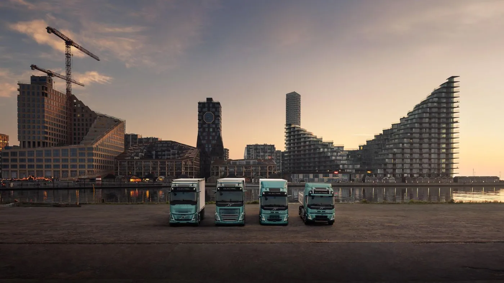

Volvo Trucks comunicó el 15 de septiembre de 2026 que su gama eléctrica recibió el International Truck of the Year 2027. El reconocimiento comprende los FH Electric, FM Electric, FMX Electric y FH Aero Electric. Es la octava victoria de la marca en este premio.
Según la comunicación del fabricante, el jurado destacó la ampliación de aplicaciones, las distintas configuraciones y la evolución de autonomía, carga y prestaciones frente a generaciones anteriores. El nombre 2027 identifica la edición del premio: no significa que la noticia corresponda al próximo año.
La distinción no confirma disponibilidad argentina de todas las versiones ni implica que cualquier modelo premiado pueda cumplir cualquier recorrido. Es un reconocimiento a la propuesta de producto, no una garantía individual de rendimiento para cada cliente.
Qué aporta un premio a la conversación de transporte
Análisis de Zabala Repuestos. Una distinción sectorial ayuda a identificar desarrollos que merecen atención. Puede ser el punto de partida para conocer una gama o pedir información, pero no reemplaza el análisis de aplicación. El transportista sigue necesitando saber qué unidad responde a su trabajo.
La comparación mejora cuando se separan tres preguntas: qué fue reconocido, qué configuración se ofrece y qué servicio se pretende realizar. Mantenerlas diferenciadas evita atribuir a un vehículo particular todas las características destacadas de una familia completa.
Una gama amplia necesita una selección precisa
Antes de elegir, conviene describir recorrido, carga, equipo instalado y lugares de atención. Las necesidades de distribución y de una aplicación de obra pueden ser diferentes aunque ambas formen parte del mismo parque. La ficha del vehículo debe leerse junto a esa descripción.
También resulta útil distinguir requisitos indispensables de preferencias. Esa lista permite conversar con el proveedor sobre alternativas sin perder de vista el trabajo. Una configuración atractiva en exposición puede dejar preguntas pendientes cuando se la vincula con los accesos o los horarios reales.

Convertir el interés en una prueba útil
Una demostración debería comenzar con una pregunta concreta. Puede tratarse de completar un circuito, comprobar maniobras o evaluar la adaptación del conductor. Acordar el objetivo evita que el resultado quede reducido a una impresión general después de manejar unos minutos.
Conviene conservar lo ocurrido durante la prueba: tarea realizada, detenciones y diferencias respecto de la jornada habitual. Las observaciones del conductor pueden acompañar los datos operativos. Así, quienes no estuvieron presentes también podrán comprender las conclusiones y sus límites.
El respaldo merece la misma atención que el vehículo
La empresa necesita conocer cómo se organiza la atención de la versión ofrecida. Formación, documentación y canales de asistencia deben formar parte de la conversación antes de la entrega. El reconocimiento internacional no responde por sí solo esas preguntas locales.
Para el taller, la identificación exacta sigue siendo esencial. Chasis, configuración e historial permiten formular consultas más claras. Cuando una flota reúne distintas generaciones, no conviene asumir que un procedimiento o una pieza corresponden a todas por compartir un nombre comercial.
Cómo leer la noticia desde Argentina
- Consultar qué modelos y versiones tienen oferta local confirmada.
- Describir el trabajo completo, incluyendo las condiciones de abastecimiento.
- Pedir una evaluación específica de la configuración propuesta.
- Confirmar cobertura técnica en las zonas donde circulará.
- Conservar por escrito los resultados y las condiciones de una prueba.
El premio ofrece una señal relevante sobre la evolución de los camiones eléctricos. Para una flota argentina, su utilidad aumenta cuando conduce a preguntas concretas y respuestas verificables. La decisión final debe poder explicarse en términos de trabajo, disponibilidad y respaldo, además del reconocimiento recibido.